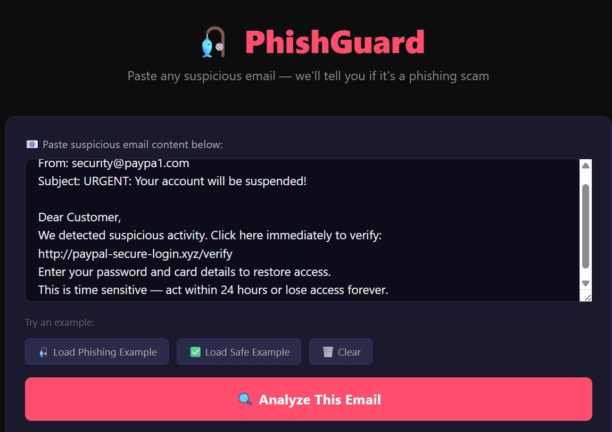
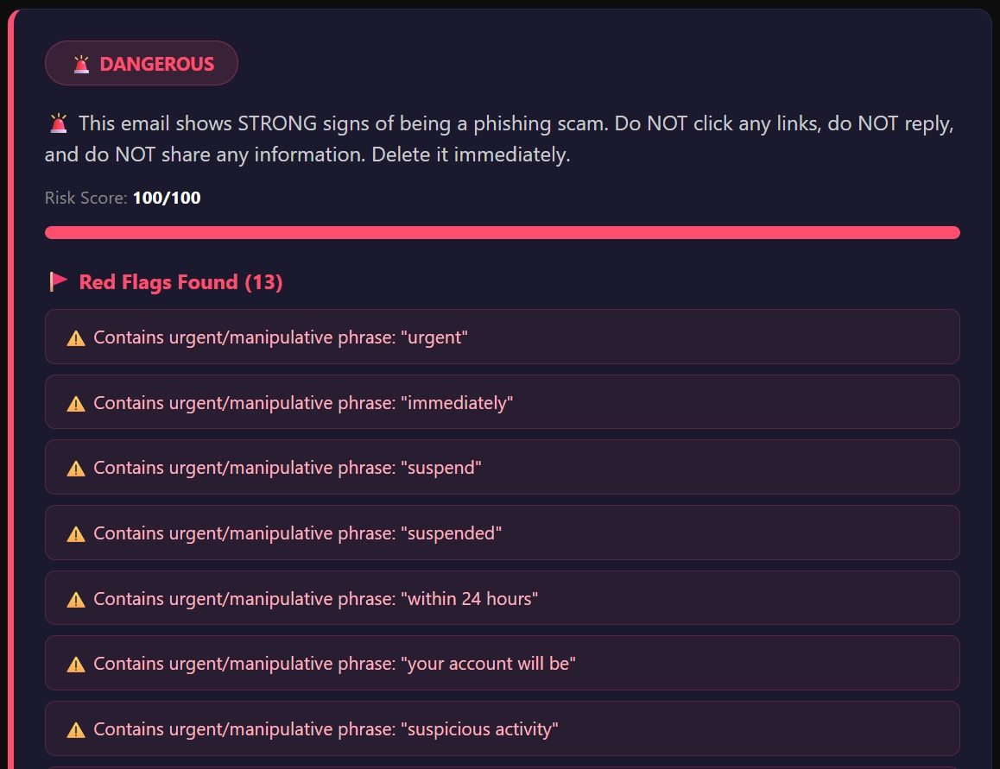
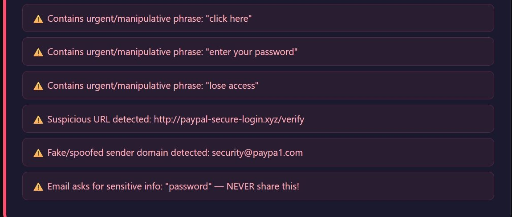
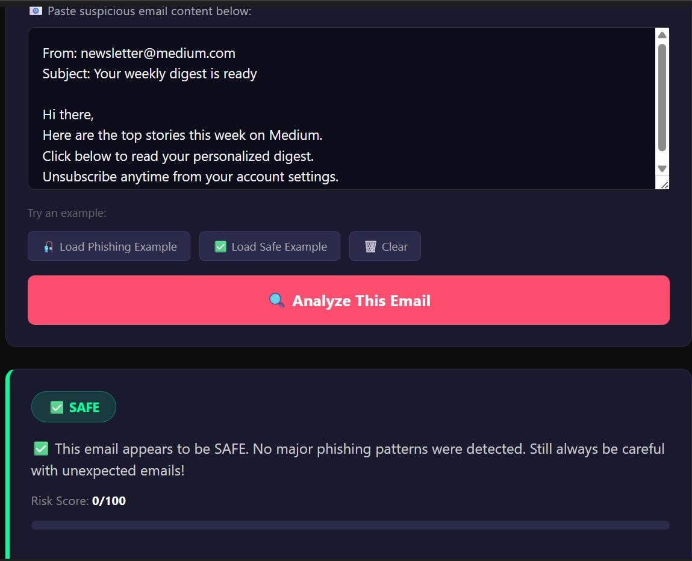

1. Problem Statement & User Empathy
Everyday email users—especially students, elderly family members, and non-technical employees—struggle to tell legitimate urgent alerts apart from sophisticated phishing scams.
Core User Pain Points
- Binary “Black-Box” Warnings: Traditional spam filters either block an email silently or show a generic warning banner without explaining why an email is risky, leaving users unsure whether to trust it.
- Decision Paralysis Under Urgency: Phishing attacks exploit artificial urgency (e.g., “Account suspended in 24 hours”), pressuring users into clicking malicious links before verifying the sender domain.
- Lack of Safe Practice Tools: Non-technical users rarely have a risk-free sandbox to test suspicious messages and learn how to spot common red flags.
2. Target User Persona & User Stories
Persona: Non-Technical Everyday Email User (“Ananya, 28 — Operations Executive”)
- Goal: Quickly verify whether an unexpected email is safe before clicking a link or entering credentials, and understand what makes it suspicious in plain English.
- User Stories:
- As a user, I want to paste an email’s sender, subject, and body into one clean screen and get an instant risk score so I know whether to trust it.
- As a user, I want specific, plain-English red flags (such as spoofed domains or credential requests) highlighted so I understand the exact threat.
- As a first-time visitor, I want one-click sample emails so I can test how the tool works immediately without searching my inbox.
3. Product Design & Scoping Trade-Offs (Execution Readiness)
Building the entire stack solo over a 4-month remote internship required balancing detection clarity, latency, and maintainability:
| Design Choice | Option Chosen | Alternative Rejected | Product Rationale (Trade-Off) |
|---|---|---|---|
| Detection Engine | Weighted Heuristic Scoring (0-100) | Black-box Deep Learning / LLM API | Heuristics run in milliseconds with zero external API cost and produce deterministic, human-readable explanations for every point added. |
| Risk Output | 3 Color-Coded Tiers (Safe, Suspicious, Dangerous) + Score | Simple Safe / Spam binary toggle | Real-world emails fall into gray areas; a Suspicious middle tier warns users to verify out-of-band without causing alert fatigue on normal emails. |
| Authentication | Zero-Login Open Web App | User accounts & inbox OAuth sync | Avoids privacy concerns around reading private inboxes while keeping testing friction near zero. |
4. UX Flow & Annotated Screens
Screen 1: Frictionless Input & One-Click Sample Onboarding

Screen 2: High-Risk Detection (100/100 Dangerous) & Explainable Red Flags



UX Decision: Paired a high-contrast red Dangerous (100/100) risk badge with an itemized list of plain-English red flags (e.g., spoofed sender domain paypa1.com, suspicious .xyz URL, urgent threat language) and clear next-step guidance (“Do NOT click any links”).
Screen 3: Safe Verification (0/100 Safe) with Responsible Guardrail Copy

Safe (0/100) confirmation while intentionally including responsible guardrail copy (“Still always be careful with unexpected emails!”) to prevent false overconfidence on novel social engineering attacks.5. Success Metrics & Validation Framework (Analytical Thinking)
To evaluate PhishGuard’s effectiveness in a real consumer or workplace rollout, I defined the following metric hierarchy:
- North Star Metric: Safe User Decision Rate (%) (percentage of analyzed emails where users take the recommended safe action—deleting/reporting high-risk emails and safely proceeding on legitimate ones).
- Core Product Metrics:
- Time-to-First-Scan (TTFS): Seconds from page load to first completed analysis (driven by one-click sample buttons).
- Red-Flag Comprehension Rate: Thumbs-up/down feedback ratio on whether the listed red flags clearly explained the risk score.
- Guardrail Metrics:
- False Negative Rate (Missed Phishing): High-risk phishing emails scored as
Safe(critical trust metric). - False Positive Rate (Alert Fatigue): Legitimate transactional emails misclassified as
Dangerous.
- False Negative Rate (Missed Phishing): High-risk phishing emails scored as
6. Key Learnings & v2 Roadmap
- Key Learning: Explainability builds user trust. Showing why
paypa1.comtriggered a warning makes users far more likely to follow safety advice than showing a generic red warning banner alone. - v2 Roadmap:
- Lightweight Browser Extension (Chrome/Edge): Surface real-time risk badges directly inside webmail clients without copy-pasting.
- Hybrid Heuristic + NLP Classifier: Combine deterministic URL/domain checks with a lightweight text model to catch subtle business-email-compromise (BEC) phrasing.
- In-Card User Feedback Loop: Add a “Was this rating accurate?” micro-survey to capture false positives and refine heuristic weights.